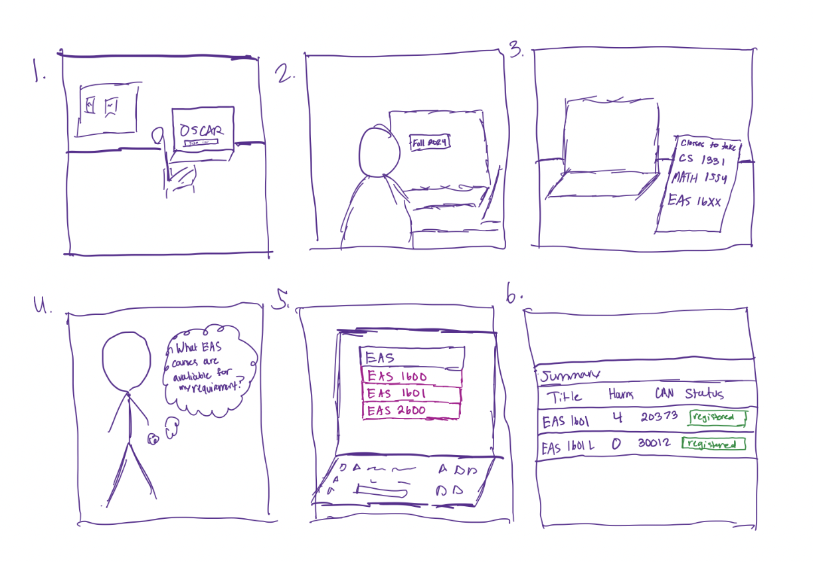

about
home
projects
contact me
I worked a remote internship for
U.S. Paint
in 2024 as a data and software intern!
I spent my time here reverse engineering custom company software
and streamlining exports from the company ERP.
----------------------------
OSCAR Website Redesign:

OSCAR is Georgia Tech's registration system that all students use.
My team was inspired by the frustrating experience during registration at Georgia Tech.
We conducted user research, created user personas, performed task analyses,
etc. to learn from users and maximize their experience.
high fidelity prototype here or below!
----------------------------
Educational Platform Design:
Designed a learning platform that uses clear labels and images to support a user friendly experience.
The target audience would be users looking to advanced their technological and computer skills.
Thus, the website was created with simple user flows and basic terminology.
----------------------------
Interactive Pokemon Scatterplot:
Example of Work from my Information & Data Visualization Course
Uses HTML and JavaScript to create a scatterplot that follows
overview, zoom and filter, and details on demand.
Hover your mouse to get more information! Shows pokemon with at least one matching type.
----------------------------
I worked on a
dungeon crawler game
with a team in android studio!
We used github to build and collaborate.
We used an
Agile
development methodology and broke our development goals into sprints.
For each sprint, members had specific responsibilities and timelines featuring development,
unit testing, code reviews, approving merge requests, and more.
https://github.com/sarah-suess/dungeonCrawler2340
----------------------------
Globit's Journey!
My video game!
This game,
Globit's Journey
, was my final project for my 2261 class.
I created all the tiles and sprites myself and the game is coded in C.
It features parallax backgrounds, animated sprites, a cheat,
"gravity," and lots of small details to prevent bugs.
It is run using docker and a mGBA emulator.
I attempted to show all the different features of this game in the playthrough.
----------------------------
VIP
For my junior/senior design project, I am working with the Georgia Tech Art & AI VIP
This is a three semester project where I work alongside faculty
mentors to gain professional and team experience.
For semester one, we created AI generated models from colored pencil drawings.
This was then turned into clay pieces that we glazed and fired.
----------------------------
TwitterBot:
----------------------------
I created this website alone using HTML and CSS.